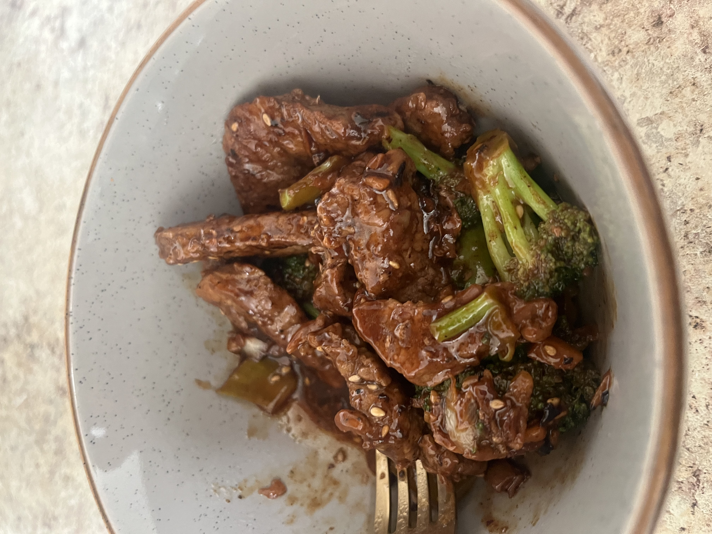

I see. You are here cuz you need something quick. Something easy. Something to scratch
that need for super tasty and delicious fast food while keeping ya on your caloric goals...
Broccoli Beef!!!

With this simple recipe we will learn the art of Broccoli Beef that will help you stay on that
Weight Loss Journey!
Ingredients?
- Any kind of lean beef (I use chuck)
- Teriyaki Sauce (I make my own, but you do you bro! Just check Macros!)
- Ginger
- Broccoli
- A pan with a lid and a stove
Alrighty it's time for some SUPER MAGICAL COOKINGGGGG
- Massage Ginger and other Spices you might want to add onto the meat.
- Cook the meat to under preferred cooking temp, making sure not to completely cook.
- Add broccoli, throwing in a a 1/8 cup of water, and putting the lid on for like 2 minutes to steam the broccoli.
- Take off the lid, then throw in the teriyaki sauce and begin stirring till preferred cooking temp.